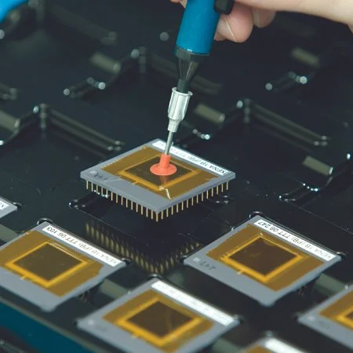

Discharge Models:
Human & Machine
Component-level ESD tests simulate real-world electrostatic events during manufacturing, handling, and operation — establishing the voltage thresholds at which device damage begins.

When Human Contact
Becomes the Threat
Simulates the electrostatic discharge that can occur when a person carrying an electric charge touches a device. It is one of the most common tests used to determine component sensitivity to human handling — a critical qualification gate for consumer electronics, industrial ICs, and automotive semiconductors exposed to frequent manual contact.

Automated Lines,
Invisible Discharges
Replicates discharges that may happen through automated equipment, handling tools, or mechanical interfaces, evaluating the potential impact on electronic components in industrial environments. With no human resistance in the discharge path, MM events are faster and more energetic — making them particularly damaging to fine-geometry device nodes.